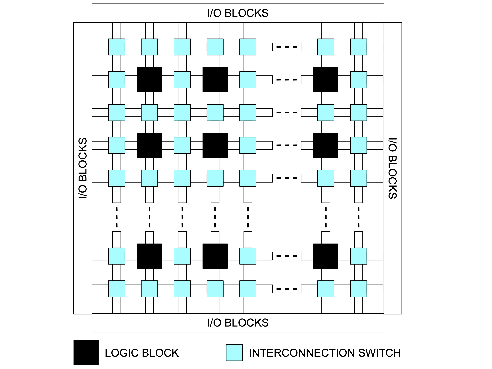
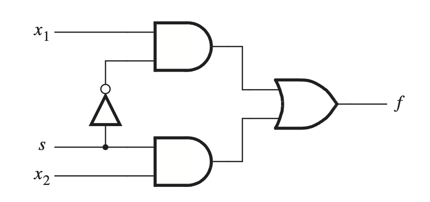
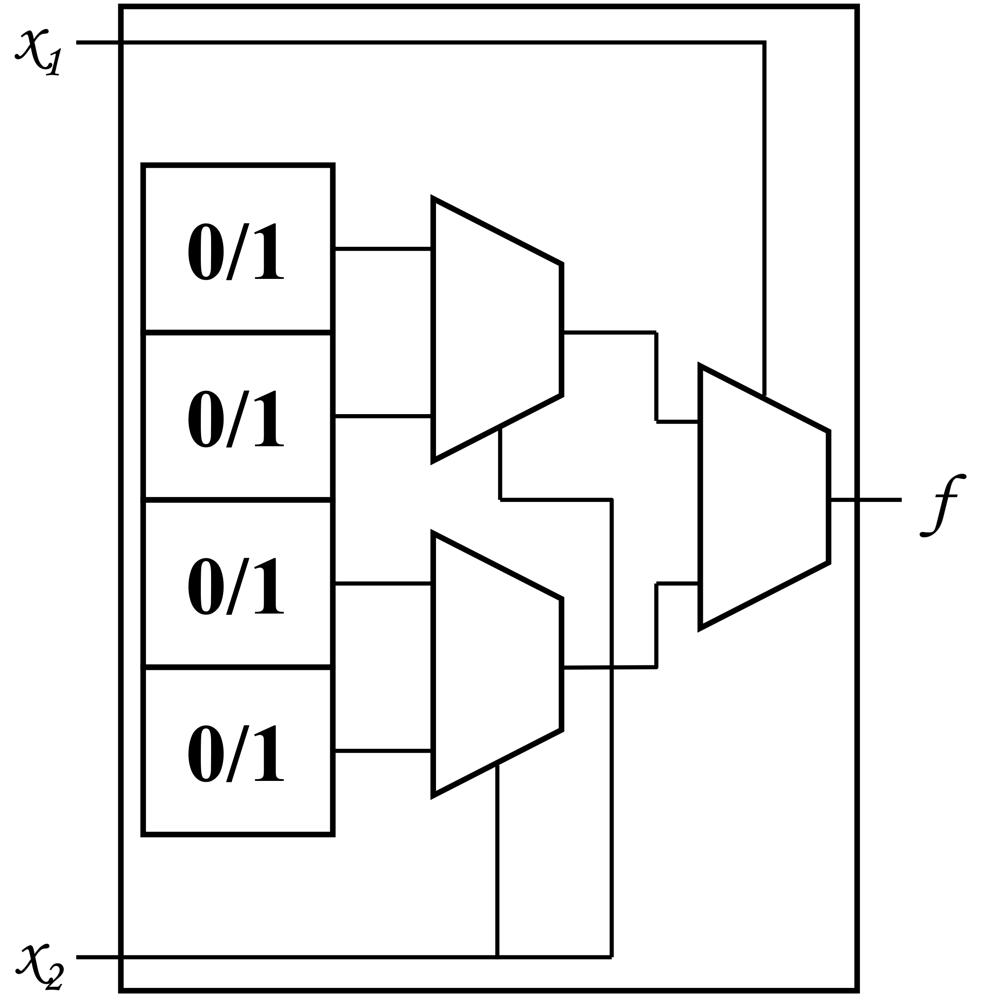
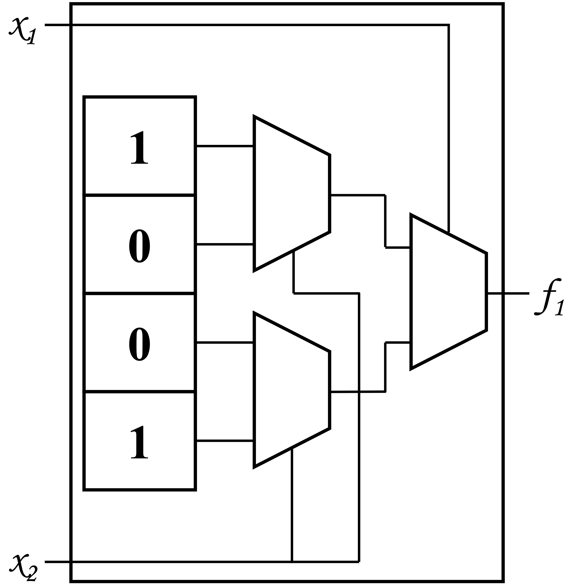
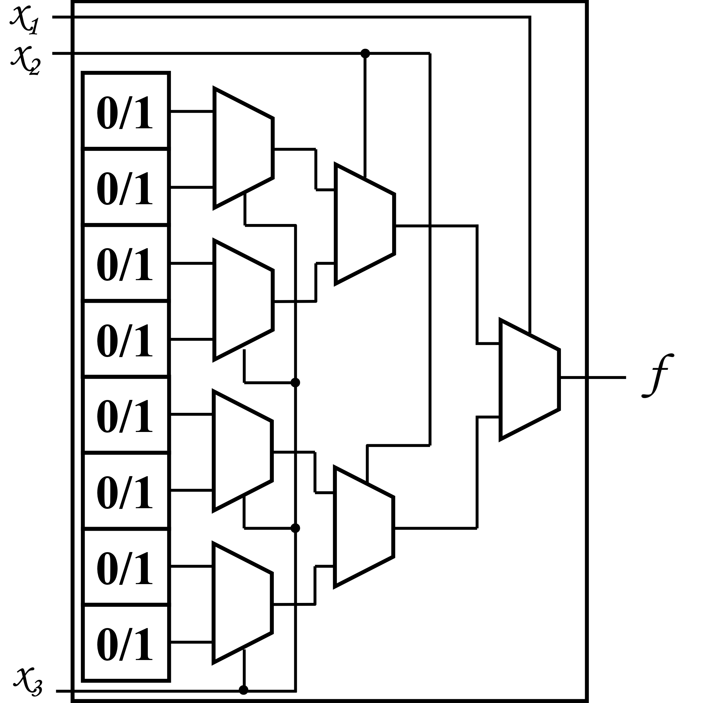
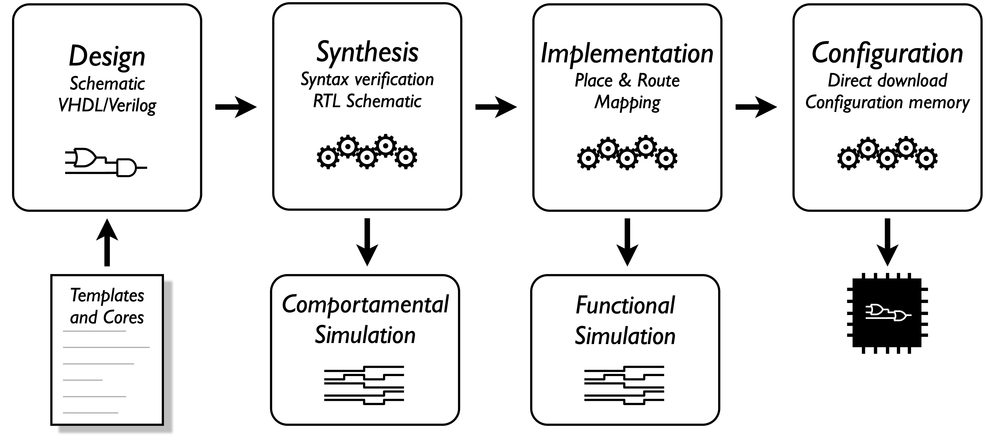

FPGA from Blinker to Game of Life,
through RISC-V also
Prof. Ricardo Menotti, Thiago Martins, Gustavo M. Barreto and Lucas Arruk Mendes
Let's get to know each other first
Practical Approach
This course will follow a very practical approach, so let's get to the code... 👉
But take it easy
We need at least a bit of context...👇
The two ways of computing [1]

The third way... [1]

Field-Programmable Gate Array (FPGA) [1]

What an incredible circuit! [1]




Intel® Stratix® 10 FPGA and SoC ALM Block Diagram [2]

Intel® Hyperflex™ Core Architecture [2]

Intel® Stratix® 10 FPGA and SoC Architecture Block Diagram [2]

Economic and performance tradeoffs [3]

Flexibility vs performance [4]

Recover or Crack? [5]

Mandelbrot set [6]
| Clock Speed | Render Time | Cycles Used | |
|---|---|---|---|
| VHDL-based generator | 25MHz | 0.2 seconds | 5,000,000 |
| Nios II (hardware floats) | 100MHz | 23.8 seconds | 2,380,000,000 |
| Visual C++ test program | 2GHz | 3.3 seconds | 6,600,000,000 |
| Nios II (software floats) | 100MHz | 54 minutes, 30 seconds | 327,000,000,000 |
And how do I use it? [1]

That's enough context
Let's go!
Before the labs, let's clarify some concepts
click here to open a hardware simulator (a.k.a. Github)
- Press . to edit with VS Code 🥚
- Install the following extensions:
- Verilog Highlight
- DigitalJS
Our first Blinker
Let's do it!
Pratice time (Lab. #1a)

Our first Blinker
Our first Counter
Our first Counter
Let's do it!
Pratice time (Lab. #1b)
A sequential problem
\[\small F_0 = 0, F_1 = 1, F_n = F_{n-1} + F_{n-2}\]Seven segments decoder
Let's do it!
Pratice time (Lab. #2)
A parallelizable problem
\[\small gray = (R \times 0.299) + (G \times 0.587) + (B \times 0.114)\]VGA signal generation
ROM memory (with contents)
Linear-Feedback Shift Register (LFSR)
Putting all together
Let's do it!
Pratice time (Lab. #3)
Duc in altum!

Lucas Vieira, CC BY-SA 3.0, Link
Conway's Game of Life
- Any live cell with fewer than two live neighbours dies, as if by underpopulation;
- Any live cell with two or three live neighbours lives on to the next generation;
- Any live cell with more than three live neighbours dies, as if by overpopulation;
- Any dead cell with exactly three live neighbours becomes a live cell, as if by reproduction.
Hardware design [7]

Let's do it!
Pratice time (Lab. #4)
RISC-V is an open standard Instruction Set Architecture (ISA) enabling a new era of processor innovation through open collaboration
RISC-V enables the community to share technical investment, contribute to the strategic future, create more rapidly, enjoy unprecedented design freedom, and substantially reduce the cost of innovation
From Blinker to RISC-V [8]
- Brief explanation of RISC-V philosophy
- Didactic and very well documented tutorial
- Targeting small FPGAs with open source tools
FemtoRV (step20.v)
System-On-Chip
Using Memory-Mapped I/O
Incrementing LEDs (counter)
Let's do it!
Pratice time (Lab. #5ab)
Conway's Game of Life
https://godbolt.org/z/Yc54z1s6bConway's Game of Life
Troubles:
- Takes up twice the memory
- Generates mul instruction to address memory
- Generates rem instruction to wrap around screen
Conway's Game of Life
Workarounds:
- Replicate only part of the frame buffer
- Linearize memory access using macros
- Software pipeline techniques to handle edges
Conway's Game of Life
https://godbolt.org/z/PqerTYx8dLet's do it!
Pratice time (Lab. #5c)
Thank you!
FPGA from Blinker to Game of Life,
through RISC-V also
Prof. Ricardo Menotti, Thiago Martins, Gustavo M. Barreto and Lucas Arruk Mendes
Additional readings